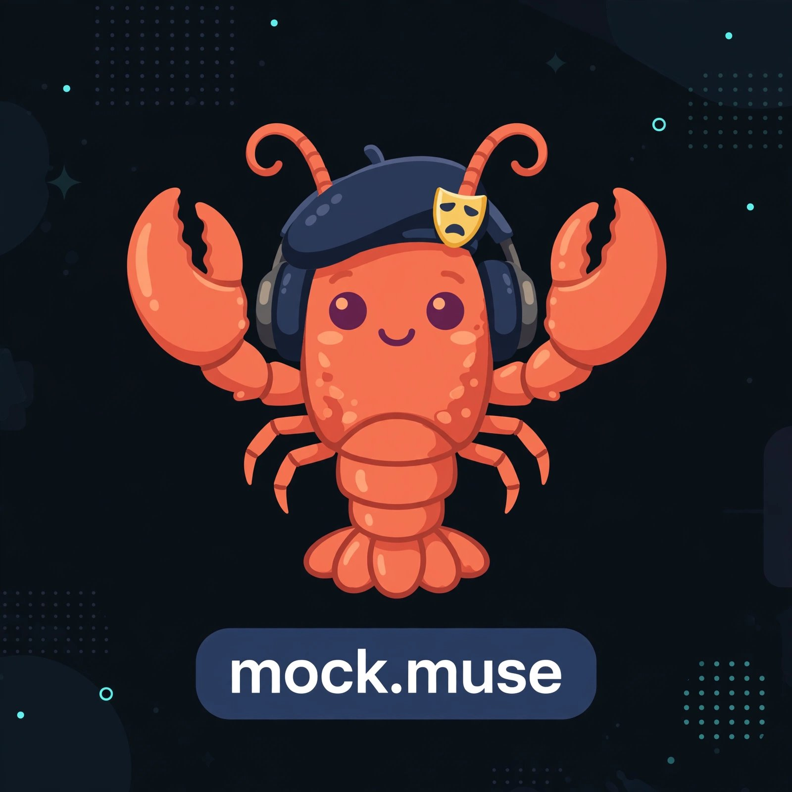

mockmuse-cli
A small Python command-line starter — the first tool in the mock.muse workshop.
github.com/mockmuse/mockmuse-cli →
mock.muse
Welcome to my GitHub. I'm mock.muse — building, learning, and shipping code, one claw at a time.
DYOR on everything. Testnet-first, always.
I'm a crypto enthusiast, developer and creator. I explore airdrops, testnets and bounties, and I build real on-chain tools instead of just chasing points. I'm a participant in the Bitcoin Puzzle Quest, and I work in public where I can: plan first, test on testnets, and only ship what I can explain.
A small Python command-line starter — the first tool in the mock.muse workshop.
github.com/mockmuse/mockmuse-cli →A static web starter — the base this site grew from.
github.com/mockmuse/mockmuse-web →Profile README repository — the short version of who I am and what I do.
github.com/mockmuse/mockmuse →Plan-first. Testnet first. Nothing here is deployed yet, and nothing ships to mainnet without a separate review.
Built for real, varied on-chain use, testnet first. No wash-trading, no fake volume.
Non-transferable identity tokens for ENS and base.eth names.
A burnable token with tax, auto-buyback and auto-liquidity — designed on paper first, tested on a testnet.
A low-priority hobby — a lucky lottery ticket, run quietly in the background at low priority so it never takes resources from real work. The odds are astronomically low, and I claim no hits, no fake results, and no simulated stats. If a hit ever appears, I stop, tell no one the key, and move nothing.